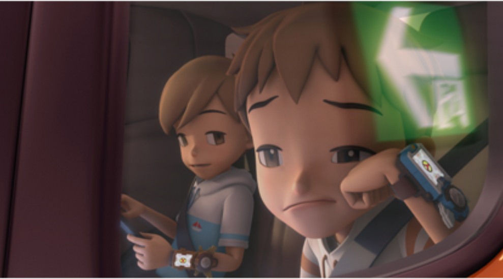
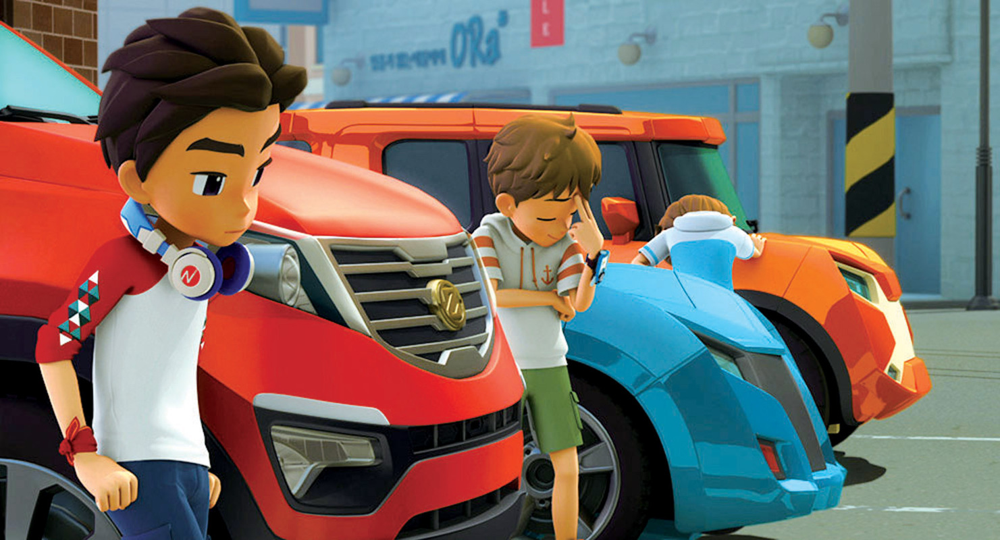
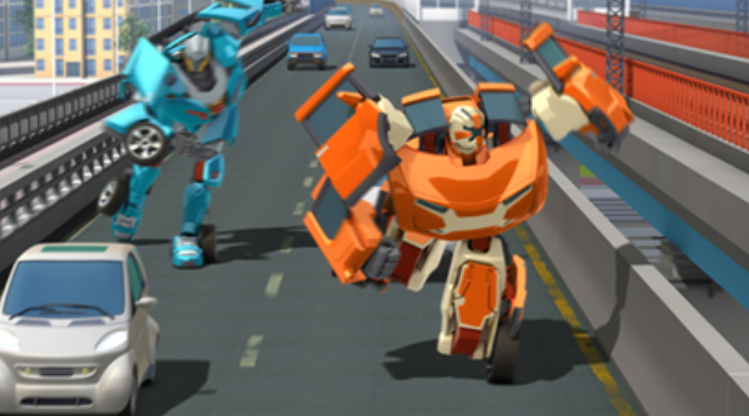
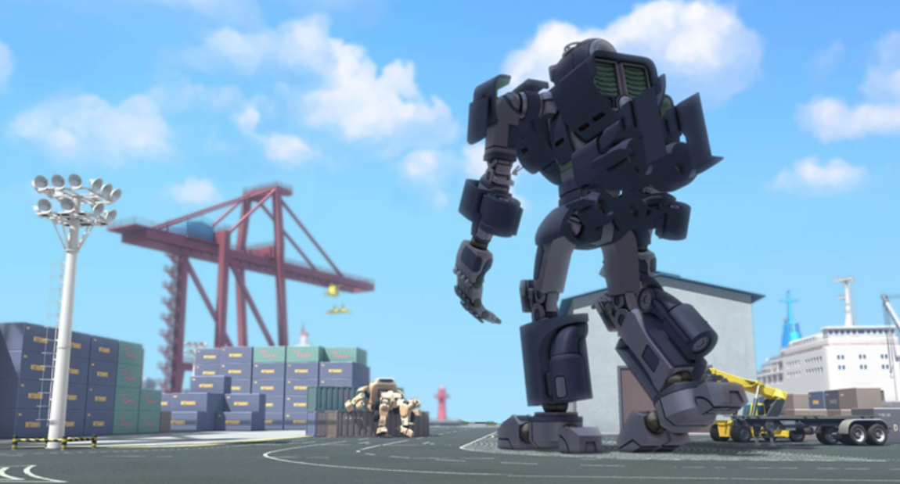

Home
Works
Services
About
News
Contact
TOBOT The Movie :
Attack Of The Robot Force
(2017)
A feature-length theatrical animation for family audiences
80 minutes
Based on the TV series,
TOBOT
Co-produced by RetroBot and CJ E&M



